基本信息
兴趣爱好
社交频道
我的推荐
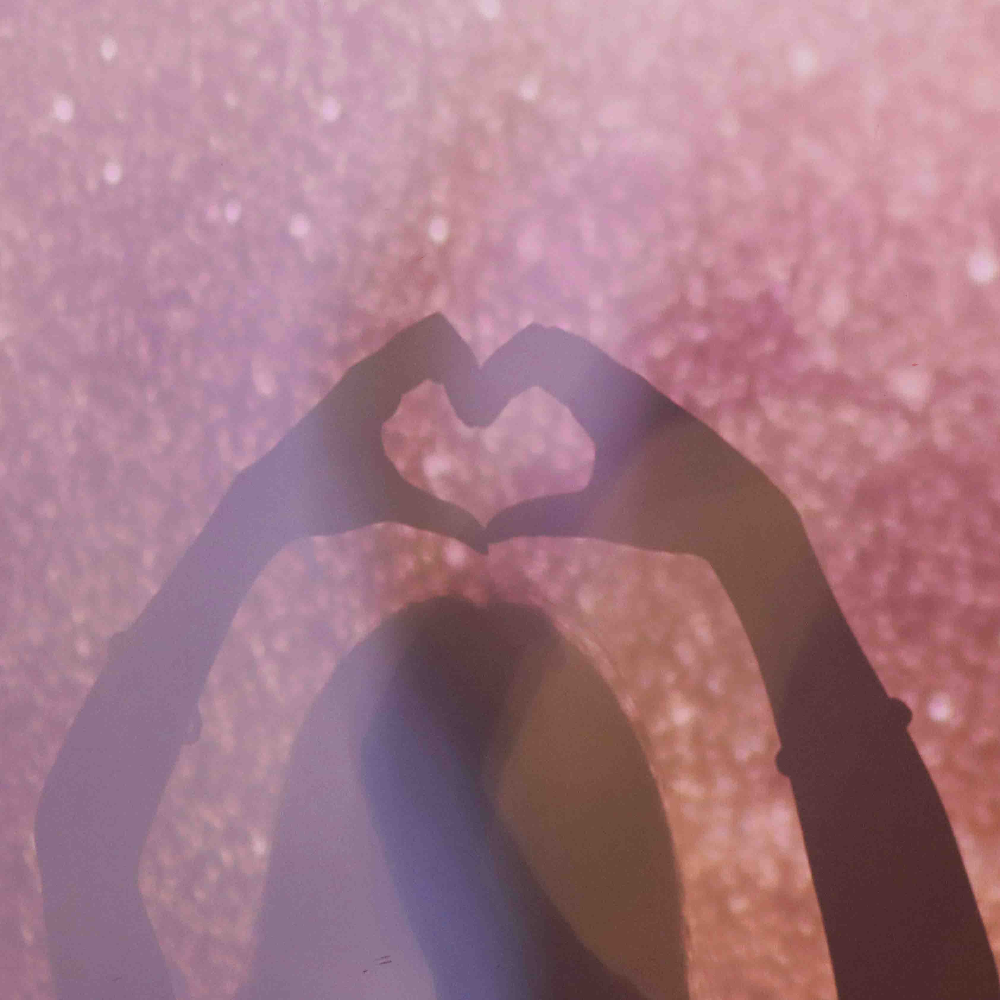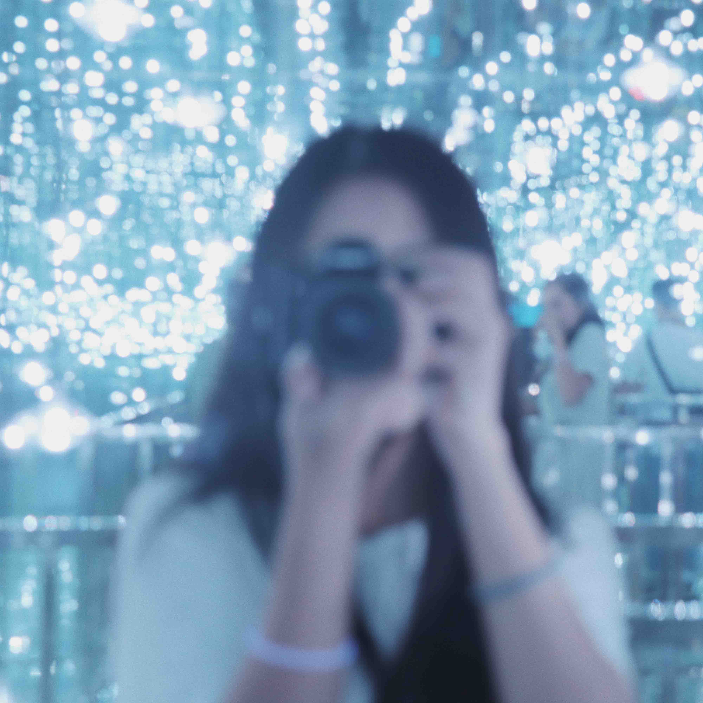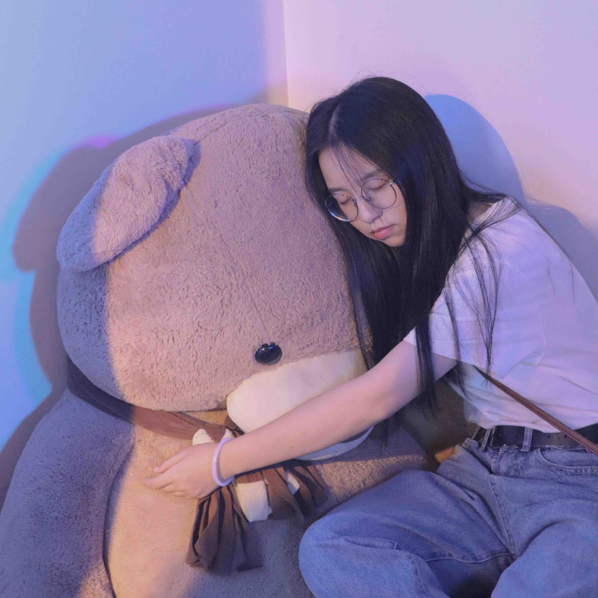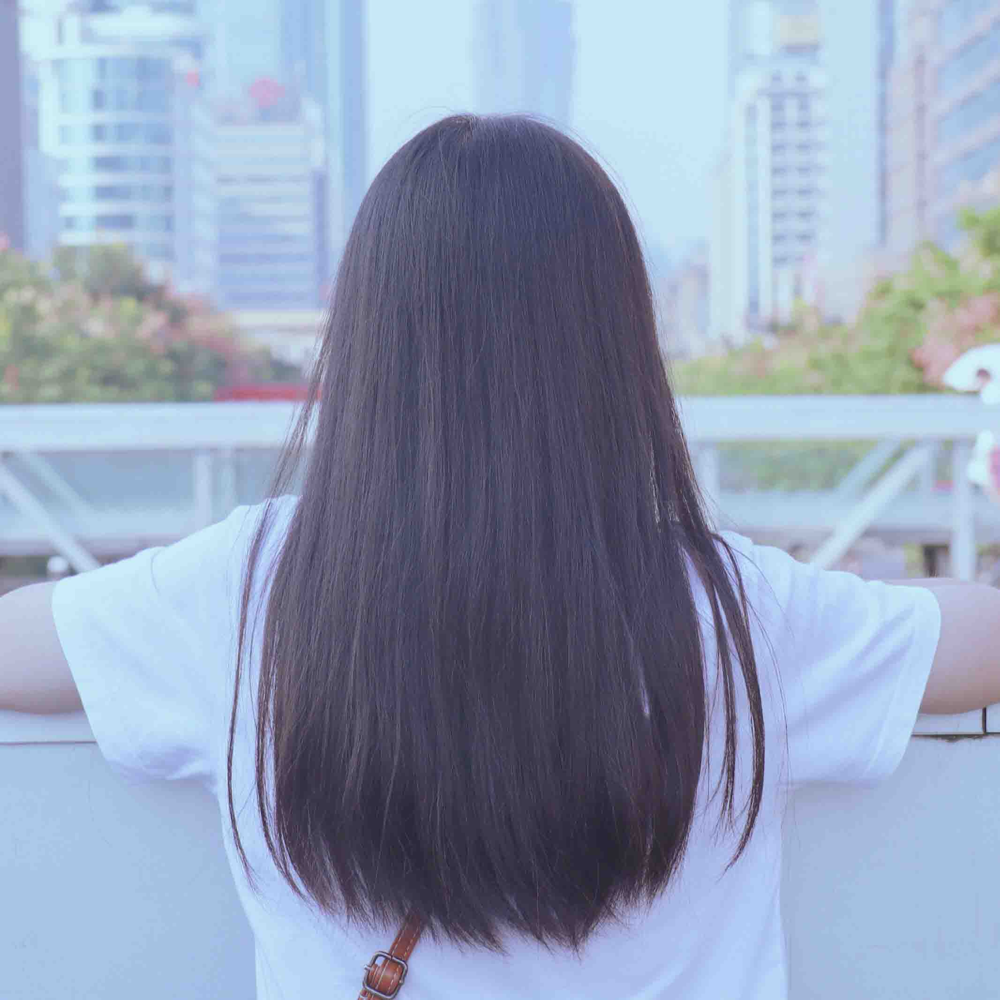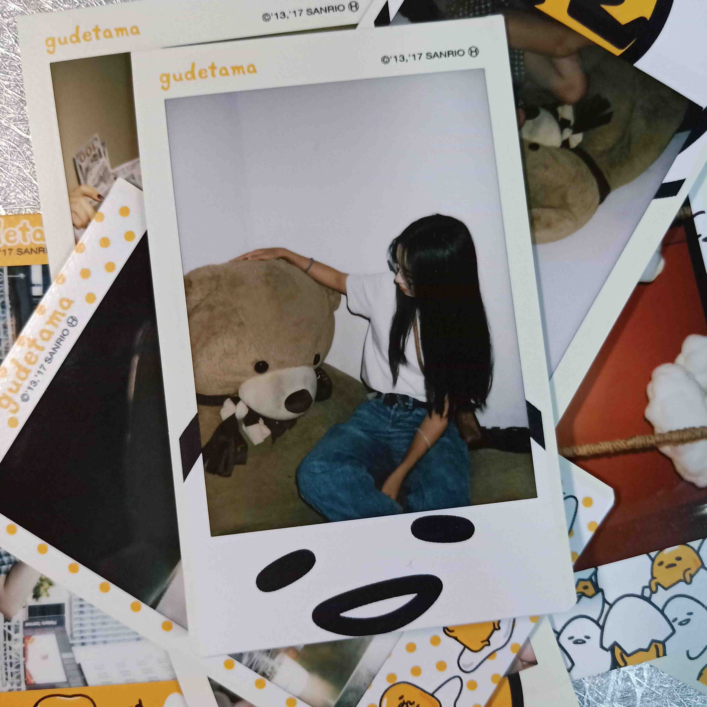
愿你的创作伴你到人生尽头
愿你无论身处何方都能宽宏大量
试炼的终点是花开万里
愿你以渺小启程
以伟大结束
《so far away》
MY WORLD
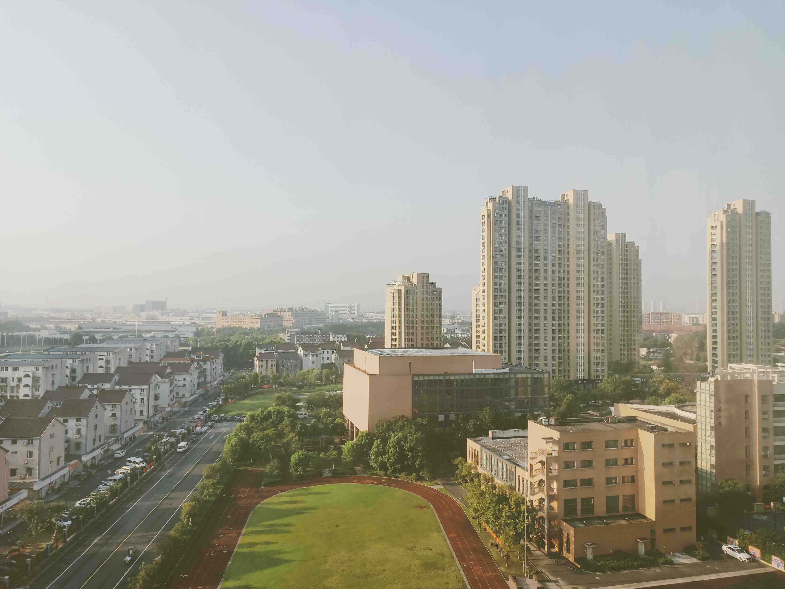
Sept 9,2018
第一次来杭州，对杭州抱有很大的期待，但是一出机场，觉得和我们那边没什么两样，后来在杭州呆久了后，发现确实有两样。
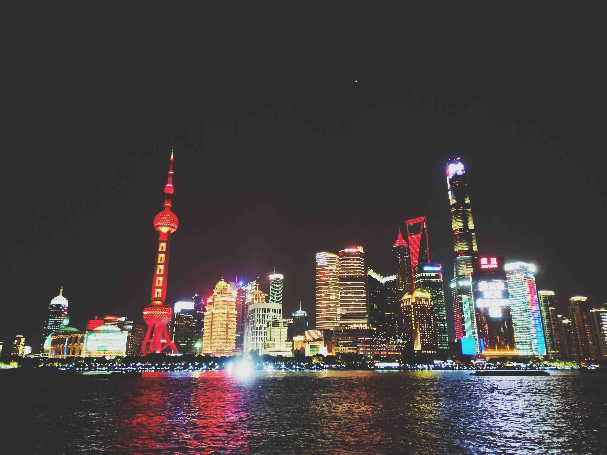
Sept 30,2018
第一次去上海，同样抱有很大的期待，但或许是上海过于繁华，从见到它的第一眼起，就觉得它与众不同。
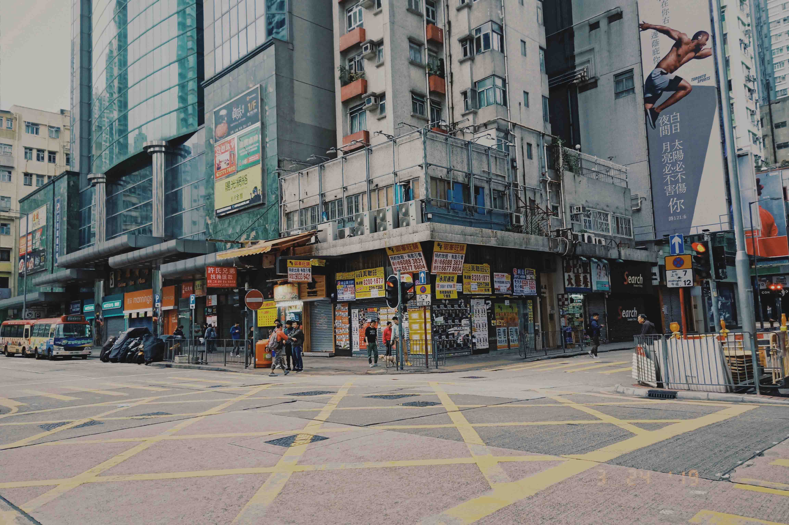
Sept 30,2018
第一次去香港，是为了演唱会，匆匆忙忙度过了一天半，所以没来得及认真看一下香港这座城。紧邻的建筑群是我喜欢的风格，尽管有时会让人有压迫感。
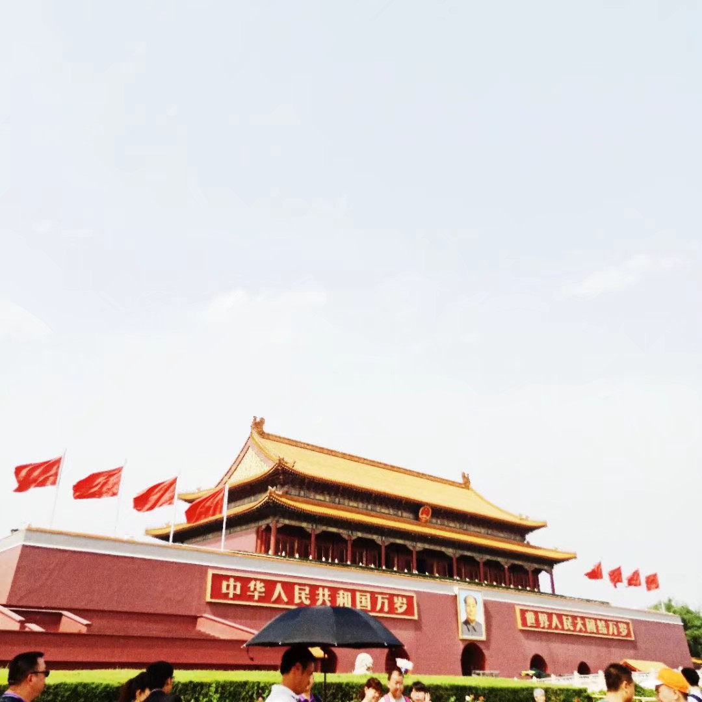
Jun 12,2018
第一次去北京，是因为高考后的自主招生。北京的拥挤让当时的我被迫待在旅馆，所以也没来得及去更多地方。
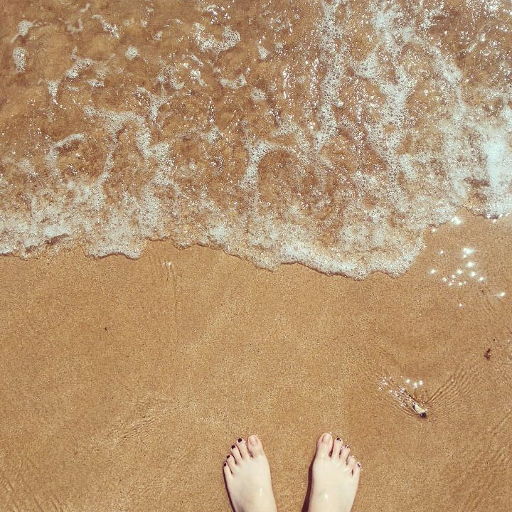
Aug 14,2014
第n次去广州，因为家庭缘故，10岁之前去过很多次广州，但小记忆总是停留在一些事和一些人上，2014年是这些年来最后一次去，那次纯粹是为了玩，而不是因为其他原因。
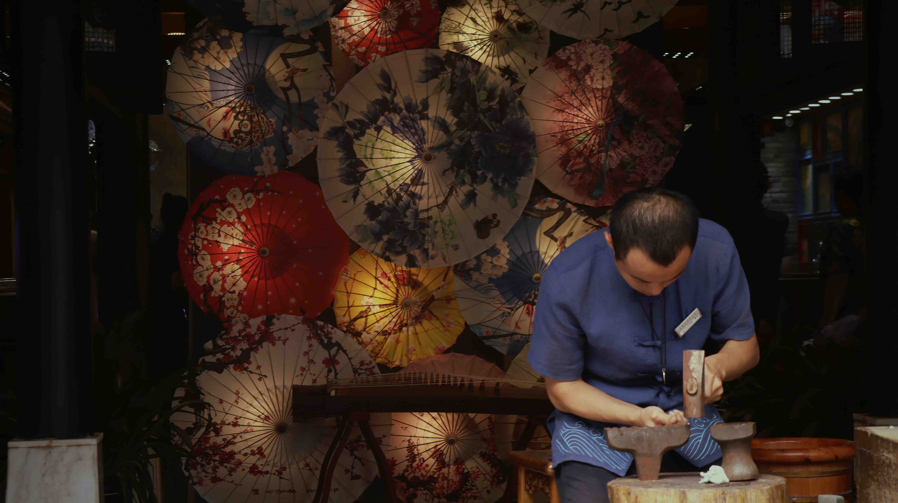
Oct 4,2019
我也不知道的第几次去上海，总之因为追星去过很多次，但这次的目的不是追星，所以去了几个景点。我时常感叹，总有一次我要为了逛景点、吃吃喝喝去上海多待上几天，因为我很喜欢这座城市。